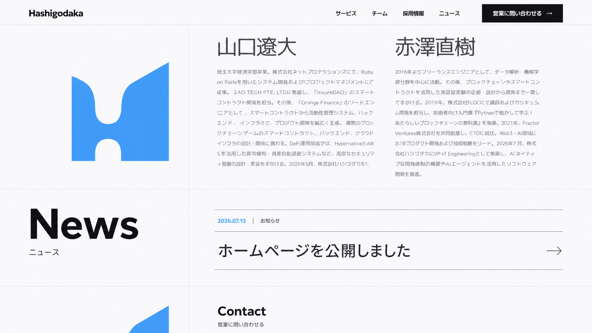
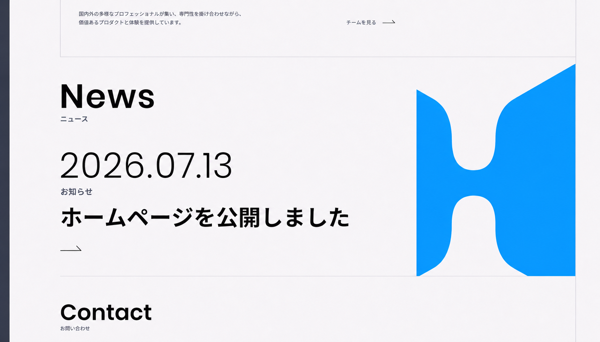
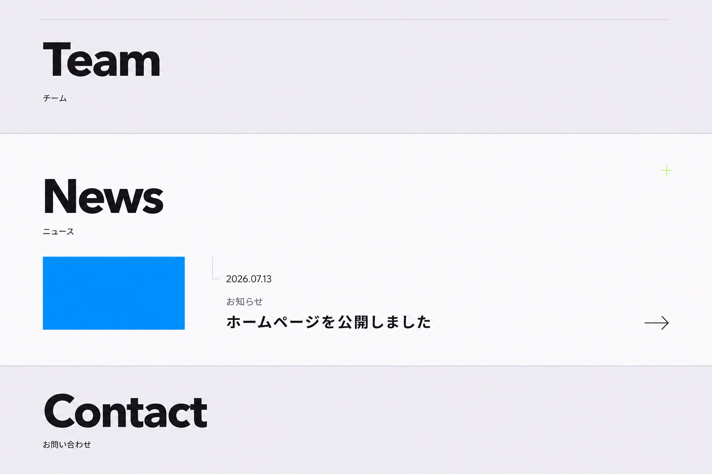
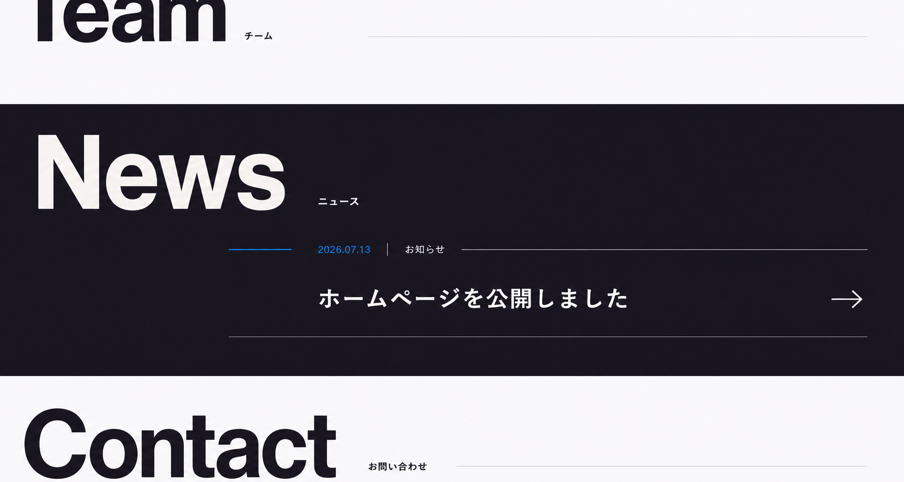
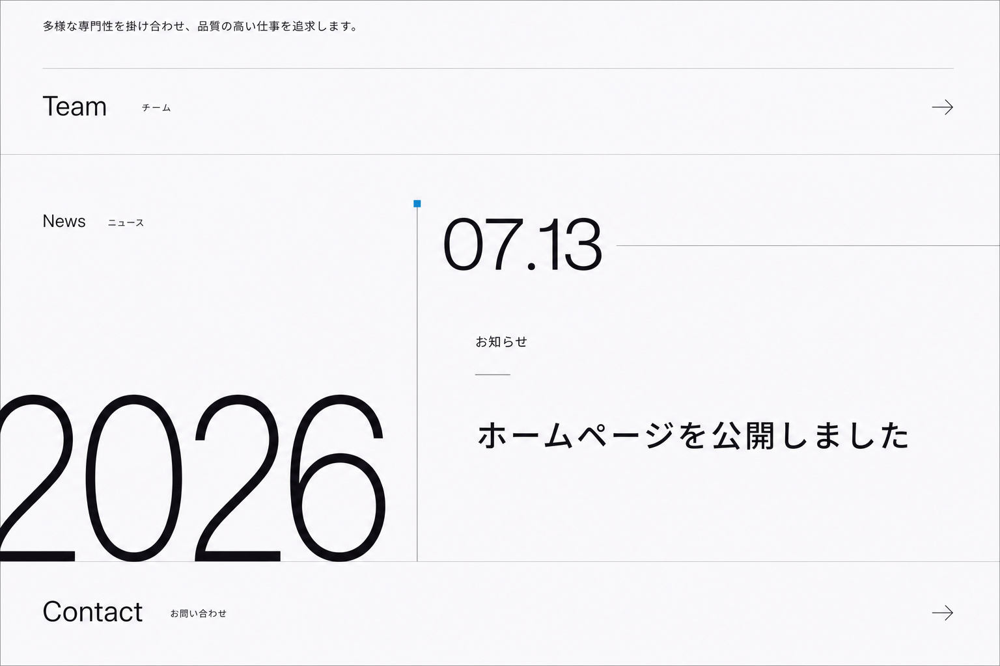
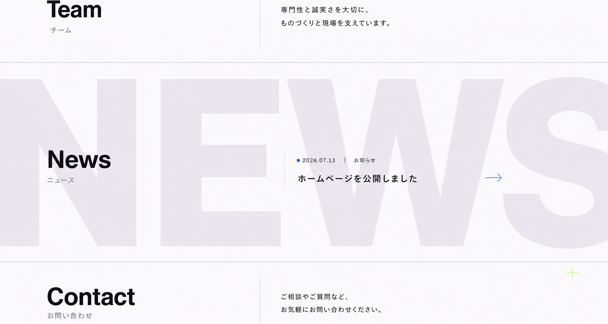
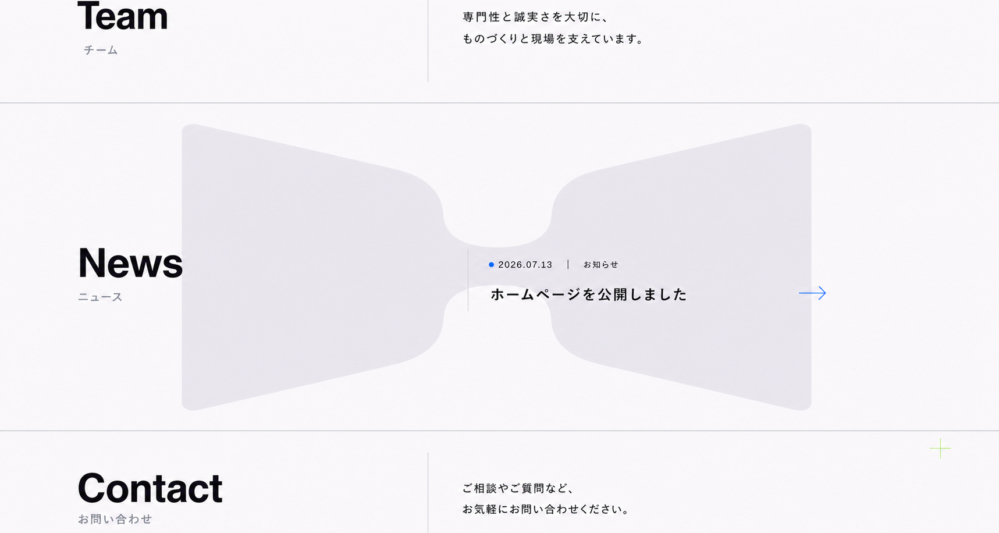
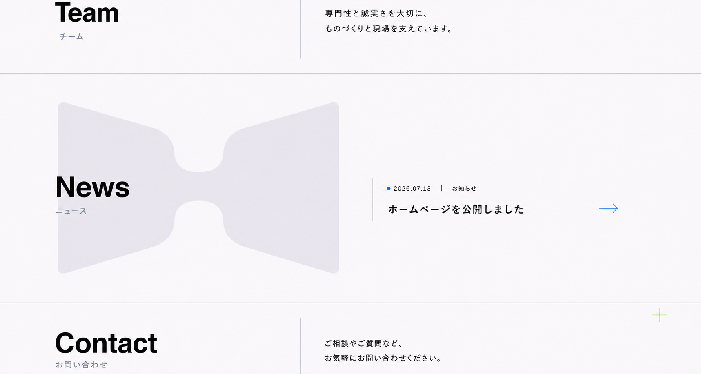
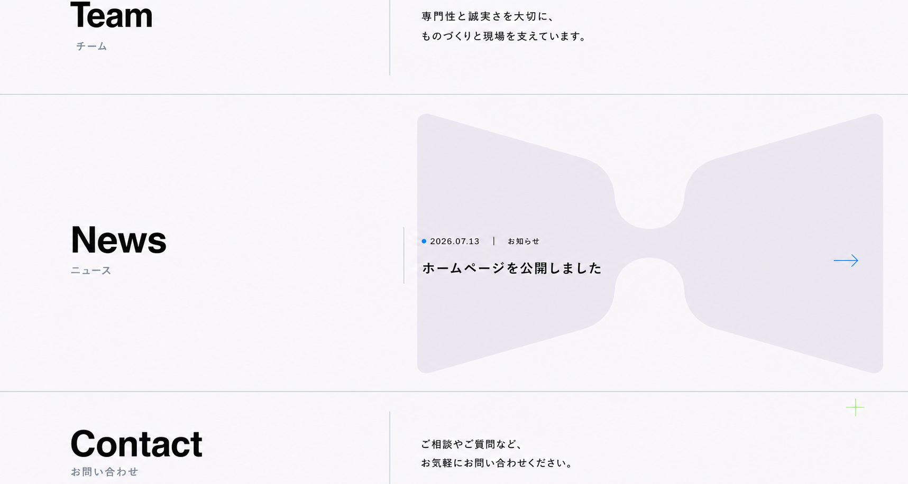
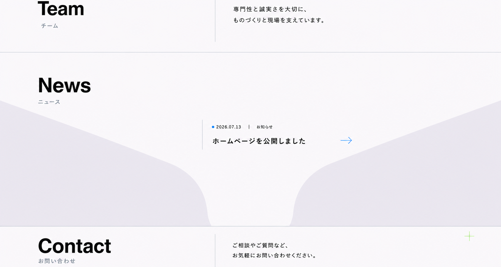

A
左にセクション見出し、右に一件の記事を大きく配置。罫線と白場で、記事数が一件でも意図的な編集誌面として見せる。

B
日付と記事タイトルをポスターのように拡大し、Primaryの01C-Cを一つだけ大きく切り取る。News自体を記憶に残す案。

C
小さなPrimary面を記事の起点にし、Canvasの広い白場へ日付・カテゴリ・タイトル・矢印を段差配置する。

D
TeamとContactの間をInkの全面帯で切り替え、Canvas文字と小さなPrimaryだけで一件の記事を強く見せる。

E
巨大な2026と別軸の07.13で日付そのものをレイアウト構造にし、記事情報をその間へ組み込む。

F
低コントラストの巨大なNEWS字面を端で切り取り、その前面へ小さく精密な記事情報を置く。

G
F案の情報配置と余白を維持し、背景の巨大なNEWS字面だけを低コントラストの01C-Cモチーフへ置き換える。

H
モチーフの全形を左端へ寄せ、News見出しから右の記事情報へ視線を渡す。

I
左側に大きな余白を残し、右寄せしたモチーフへ記事ブロックを交差させる。

J
モチーフを下端から立ち上げ、Contactとの境界で切る例外的なクロップを比較する。